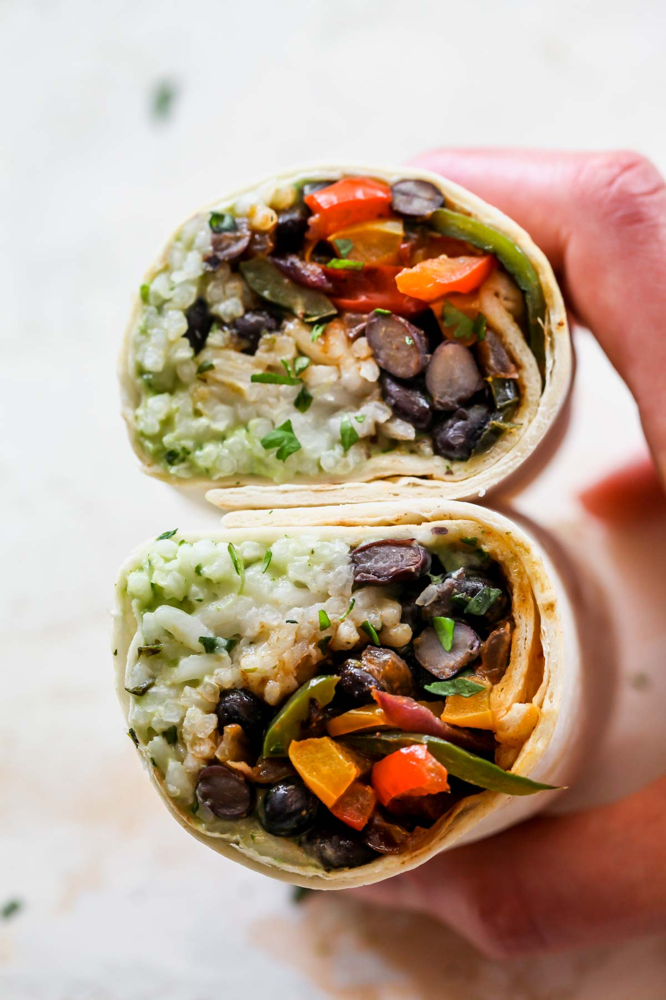

Burritos

Description
This is the ultimate vegetarian burrito recipe.
These burritos are freezer friendly and perfect for meal prep.
This particular recipe will yield 6 burritos.
Ingredients
Burrito Filling
- 1 cup uncooked white rice
- 3/4 tsp. kosher salt, divided
- 2 Tbsp., plus 2 tsp. extra-virgin olive oil, divided
- 3 Tbsp. finely chopped fresh cilantro
- 1/2 tsp. lime zest, plus 1 Tbsp. lime juice
- 2 bell peppers (colors of choice), finely sliced
- 1 poblano pepper, seeds and ribs removed, finely sliced
- 1/2 red onion, finely sliced
- 1 Tbsp. taco seasoning (homemade or store-bought)
- 1 (15-oz.) can black beans, drained and lightly rinsed
- 2 tsp. adobo sauce (from a can of chipotle peppers)
- 1/2 tsp. ground cumin
- 6 burrito-size flour tortillas, warmed
Avocado Cream Sauce
- 1/2 ripe avocado
- 1 cup cilantro leaves
- 3 Tbsp. sour cream or Greek yogurt
- 1 small jalapeño (or 1/2 large), seed and ribs removed
- 1 garlic clove
- 2 Tbsp. fresh lime juice
- 1/2 tsp. kosher salt
Steps
- Prepare Zesty Avocado Cream Sauce:
To a food processor, add avocado, cilantro, sour cream (or Greek yogurt), jalapeño, garlic, lime juice, and salt.
Blend mixture, stopping to scrap down the sides as needed, until mostly smooth. Set aside.
- Prepare Cilantro-Lime Rice:
In a small saucepan, combine dry rice with 2 cups of water and 1/2 tsp. salt.
Bring mixture to a boil, reduce heat to medium-low, cover, and gently simmer for 15 to 18 minutes, or until the liquid is absorbed and rice is tender.
Remove from heat and stir in 2 tsp of the olive oil, chopped fresh cilantro, lime zest, and lime juice.
Keep covered while you prepare remaining components.
- Sauté Fajita Veggies:
While the rice cooks, heat remaining 2 Tbsp. olive oil in a large skillet over medium-high.
Once hot, add bell peppers, poblano pepper, and red onion. Cook 7 to 9 minutes, stirring only occasionally, until tender.
Stir in 1 Tbsp. taco seasoning and remove from heat.
- Prepare Chipotle Black Beans:
Drain and lightly rinse black beans. Shake off excess water and transfer to a bowl.
Stir in adobo sauce, ground cumin, and remaining 1/4 tsp. salt.
Cover with a damp paper towel and microwave for 2 minutes, stopping at 1 minute to stir through, until warm.
- Assemble and Roll Burritos:
Working with one burrito at a time, spread 1 to 2 Tbsp. of avocado cream sauce in a strip (running parallel to you) across the bottom third of the tortilla, leaving a 1-inch edge on the left and right sides so the fillings don't spill out when you roll it.
Top with a heaping 1/3 cup rice, 1/3 cup black beans, and a heaping 1/3 cup fajita veggies.
To wrap the burritos, fold the short left and right edges in towards the filling.
Keeping the sides folded, fold the bottom of the tortilla (closest to you) up and over the filling.
Tightly roll away from you until the entire burrito is secure.
If you'd like to crisp the outside of the burrito, heat in a lightly greased skillet over medium-high heat for 2 minutes per side.